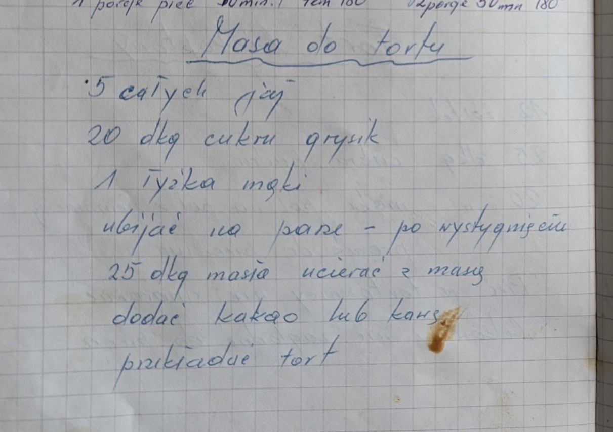

Masa do tortu


Składniki
- 5 całych jaj
- 20 dkg cukru grysik
- 1 łyżka mąki
- 25 dkg masła
- kakao lub kawa
Przygotowanie
- Jaja, cukier i mąkę ubijać na parze.
- Po wystygnięciu ucierać 25 dkg masła z masą.
- Dodać kakao lub kawę.
- Przekładać tort.
Oryginalny zapis
Masa do tortu 5 całych jaj 20 dkg cukru grysik 1 łyżka mąki ubijać na parze – po wystygnięciu 25 dkg masła ucierać z masą dodać kakao lub kawę przekładać tort